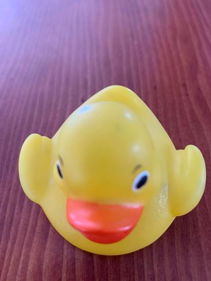
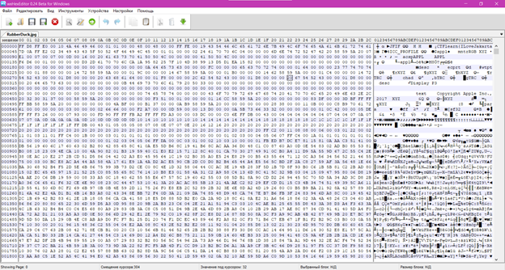
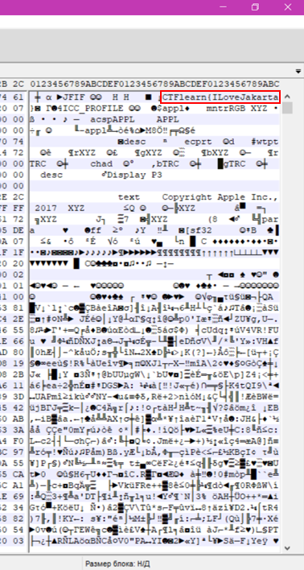

Разбор задачи направления Forensics CTFlearn (для чайников). Автор: Кочева Елизавета
В задании сказано просто найти флаг. К нему приложено фото:

1 RubberDuck.jpg
Самое первое, что мы можем сделать с этим фото – это скачать и открыть в специальной программе Hex-редактор или любой похожей. Суть в том, что эта программа показывает нам файл в байтах, где мы можем отследить каждый символ в шестнадцатеричной системе счисления, а также альтернативное отображение данных как текста в кодировке ASCII.

2 scrin1.png
Мы знаем, что наш флаг должен иметь вид: CTFlearn{flag}. Изучаем колонку справа (альтернативное отображение данных), ищем текст, который укажет нам, что это флаг.

3 scrin2.png
Флаг найден!
Ответ: CTFlearn{ILoveJakarta}.